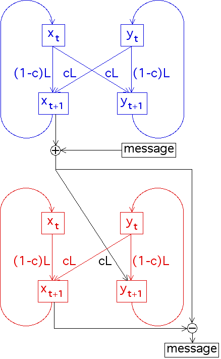

|  |
| The (small) message is added to the output of the sender's x logistic map. |
| This x + message is used as the coupling signal for the receiver's y logistic map. |
| If the synchronization is stable, the small message will not appreciably affect the synchronization of the sender's logistic maps and the receiver's logistic maps. |
| So the receiver's x and the sender's x are synchronized. Then |
| x + message - x = message |
Return to Secure Communication.